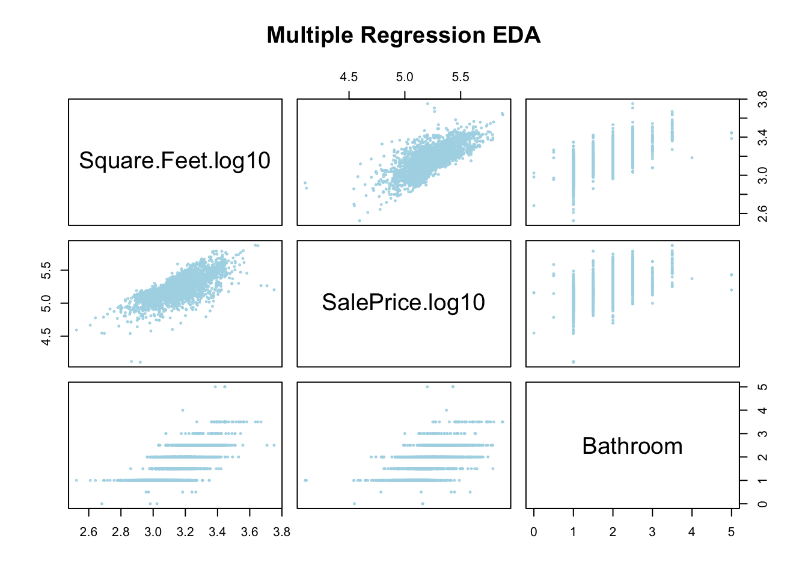
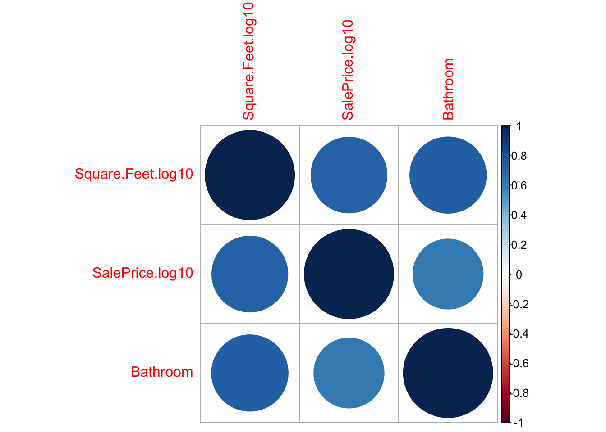
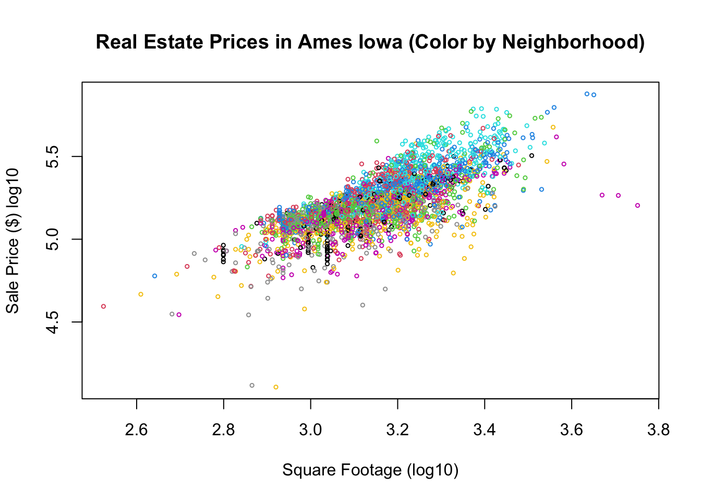
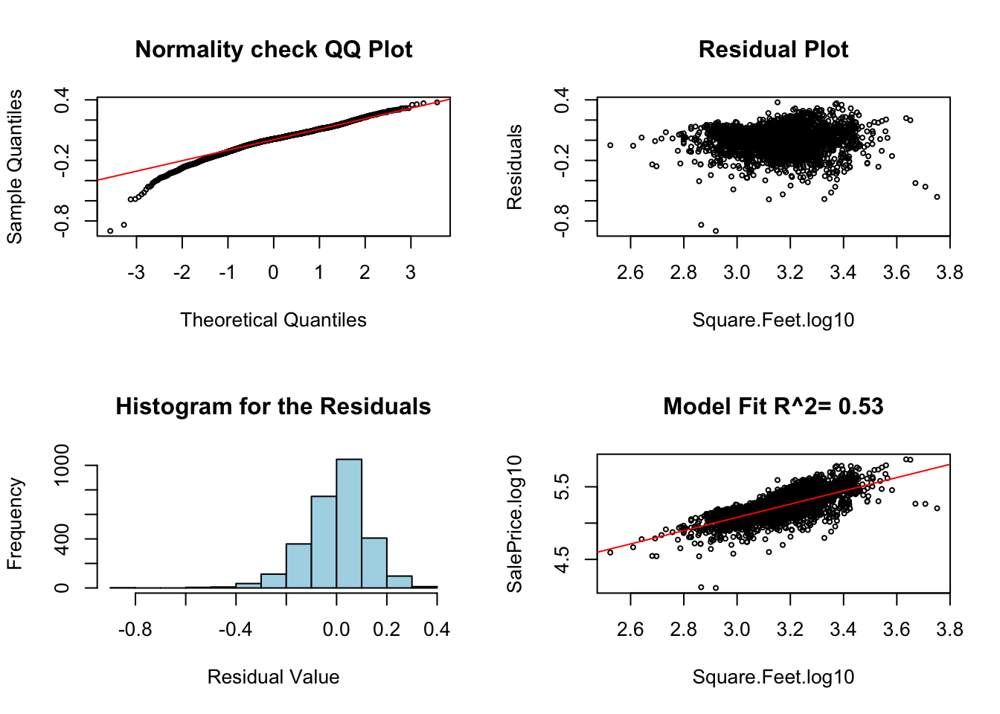
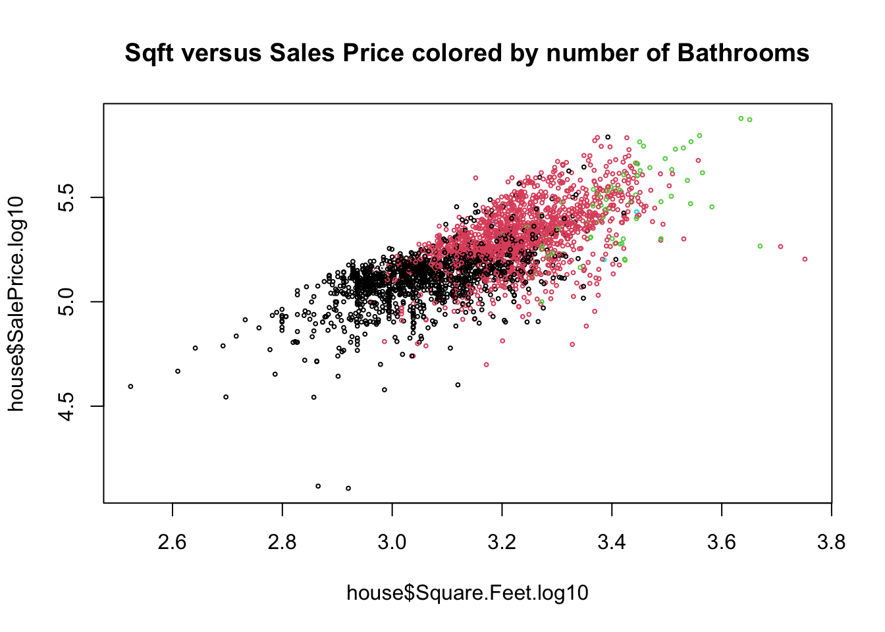
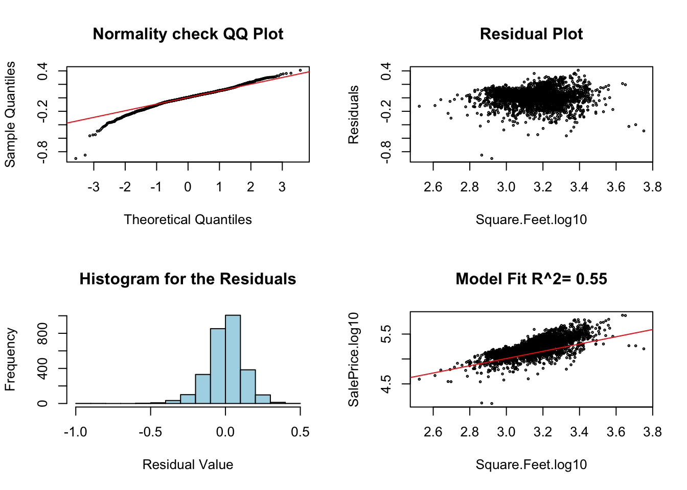

Chapter 13 Multiple Regression Models
13.1 Introduction to Multiple Regression Models
We have learned about simple linear regression where we have a single explanatory and response variable, which we assume are related in a linear manner. This gives us a model of the form: \[ y=\alpha+\beta x+\epsilon_i\] where \(y\) is our response variable, \(x\) is the explanatory variable. The parameters \((\alpha, \beta)\) the y-intercept and slope respectively are fit to the data to minimize the least-square error. Finally, the term \(\epsilon_i\) is the random noise which is assumed to be Gaussian (Normal) distributed with equal variance.
However, in analyzing data we are often interested in building a model for a system where more than one input of explanatory variable may be important. For example, when building a model to predict the value of a stock-price we would want to include several economics indicators (market measures, GDP, etc). To build a model of the size of the freshman class at Schreiner we would want to include many factors such as the number of high school graduates in the area, economic health of Texas, etc.
Models with more than one explanatory variable are called multiple regression models. They take the general form: \[ y=\alpha+\beta_1 x_1+\beta_2 x_2+...+\beta_n x_n+\epsilon_i \] Often the most important decision to make when building a multiple regression model is deciding what explanatory variables \((x_1, x_2, ... x_n)\) to include in the model. It is sometimes tempting to just include everything that you feel might be relevant. However, this will lead to very complex models which are difficult to interpret, and can lead to exceptionally poor models due to the dangerous condition called over-fitting. A model which has been over-fit can be exceedingly dangerous as it will appear to be very precise when considering the collected data but may generate exceptionally poor estimates when used to make new predictions.
A key decision in building a regression model is to deciding what variables to include in the model.
The starting point for this decision should always be common sense. You should never include an explanatory variable which you don’t have good reason to suspect will have any effect on the response variable (output). For example, if we are building a model to predict the Schreiner freshman class size, it would make no sense to include an explanatory variable of the number of ice cream cones sold in Texas the previous year. Ice cream sales should be totally unrelated to the freshman class size, so anything we find would likely be spurious.
We also need to ensure that any explanatory variables we include are at least approximately linearly related to the response variable. We checked for this in simple linear regression using a scatter plot of x versus y. If this scatter plot looks roughly like a line then it makes sense to build a simple regression model.
For multiple regression we have a simple plot we can make to look for relationships between our variables. To make this plot we need to be considering numeric variables (just like a scatter plot), therefore in the below command I am using the command grabNumeric from my package. This takes a data frame (spreadsheet) and removes any categorical variables from it, leaving only the numeric values.
For these notes I will be using the Ames Housing data set from my package. The columns of this data set are:
colnames(AmesHousing_Regression)## [1] "Square.Feet.log10" "SalePrice.log10" "Neighborhood"
## [4] "Bathroom"The Neighborhood column is categorical, the others are numeric. The goal is to build a model which can predict the sales price of a house using the SQFT, Bathrooms and Neighborhood information. It makes logical sense that the size, number of bathrooms and neighborhood would each effect the sales price of a house.
plot(grabNumeric(AmesHousing_Regression), cex = 0.3, main = "Multiple Regression EDA",
col = "lightblue")
This plot shows the relationship between each of these factors and the sales price, and also looks for relationships between the variables themselves. Since we have three numeric variables here we get a 3 by 3 grid of plots. The plot in the first row, second column shows the SQFT on the y-axis and the sales price on the x-axis (notice how you can see this from looking at the diagonal labels).
Now that we know how to read this plot, what are we looking for? Well first, we want to check if our response variable (sales price) at least approximately linearly depends on the explanatory variables (bathrooms and SQFT). This is shown in the 2nd row of our grid. Each of these look roughly like we could fit a line to the trends.
The next thing we want to look for is any strong relationships between our explanatory variables (SQFT and Bathrooms). This is shown in row 1, column 3 as bathrooms versus SQFT and in row 3, column 1 as SQFT vs bathrooms. From these graphs it looks like we have a pretty solid relationship between the number of bathrooms and the square feet of the house. This also makes some logical sense as bigger houses usually have more bathrooms.
This relationship between these two variables means that we should really only include one of them in our multiple regression model. This condition is called multicollinearity between these two variables. In general, this is a bad thing and this means we really shouldn’t include both of these variables together in our regression models (we will ignore this below for the sake of demonstration).
Practically, this means that adding bathrooms to our model won’t really improve our predictions much: if we know the square footage we have a pretty good idea of the bathrooms already.
We can also get an idea of the multicollinearity of our model using a correlation matrix. Here we find the linear correlation between all sets of variables in the data set. The correlation is a numerical measure of how much our scatter plot looks like a line. It will range between the values of [-1,1] with positive one meaning all the data lies along a perfect line with positive slope and -1 meaning the data lies along a line with a negative slope (decreasing relationship)
The below code forms a correlation matrix for the housing data.
cor(grabNumeric(AmesHousing_Regression))## Square.Feet.log10 SalePrice.log10 Bathroom
## Square.Feet.log10 1.0000000 0.7231662 0.7330792
## SalePrice.log10 0.7231662 1.0000000 0.6161632
## Bathroom 0.7330792 0.6161632 1.0000000As you can see all of these variables are positively related. The diagonal values will always be all ones, as every variable is perfectly correlated with itself.
We can form a graphical version of this correlation matrix using:
library(corrplot)
corrplot(cor(grabNumeric(AmesHousing_Regression)))
You may need to run the command:
install.packages("corrplot")to be able to make a correlation plot yourself. You will only need to do this one time.
Mutual funds are created by bundling a bunch of individual stocks together. The idea is that budling the stocks together will can average out some of the flucuations and get a lower risk investment. However, someone needs to choose exactly which stocks to include in the fund and how much money should be invested in each companies stock. Typically, stock traders will design a mutual fund and record how well it would have done in the market for some trial period (say 1 year), then the proposed mutual funds which perform best over that trial period are offered to investors for us to put our money in. Typically, they will advertise the average return of the mutual fund achieved during the trial period. Most of the time these funds will have very impressive returns.
However, once the investors put their money into the funds they typically do significantly worse then the rates first reported. We can understand this as thinking of the trial period as fitting the models. The limited amout of data in the trial period makes it very easy to overfit the model. Thus, the predictions quickly become inaccurate when we move outside the trial period.##Building a Multiple Regression Model
13.1.1 Housing Prices (Review of Simple Regression Results)
Let’s return to the housing data set and see if we can improve our model by including some additional factors. In the simple linear regression notes we used linear regression to understand the relationship between the sales price of a house and the square footage of that house. The data set comes from Ames, Iowa house sales from 2006-2010. First, lets read this data in and make a scatter plot of the sales price versus the square footage.
data("AmesHousing_Regression") ##from HannayAppliedStats package
house <- AmesHousing_Regression ##rename this data
house <- dropLowFactors(house, factor.column = 3, threshold = 30) ##from HannayApplied Stats drop all neighborhoods with less than 30 data points
head(house)## Square.Feet.log10 SalePrice.log10 Neighborhood Bathroom
## 1 3.219060 5.332438 NAmes 1.0
## 2 2.952308 5.021189 NAmes 1.0
## 3 3.123525 5.235528 NAmes 1.5
## 4 3.324282 5.387390 NAmes 2.5
## 5 3.211921 5.278525 Gilbert 2.5
## 6 3.205204 5.291147 Gilbert 2.5We can see this has the log10 of the selling price, the square footage and the number of bathrooms in the house.
plot(house$Square.Feet, house$SalePrice, main = "Real Estate Prices in Ames Iowa (Color by Neighborhood)",
xlab = "Square Footage (log10)", ylab = "Sale Price ($) log10", col = house$Neighborhood,
cex = 0.5)
As expected we can see from the plot that square footage is somewhat important in determining the sales price of the house, but we can see that their is significant variation in the sales price for any given sqft size. Let’s try and build a linear model for the relationship between the sqft of the houses and the sales price.
res.house = lm(SalePrice.log10 ~ Square.Feet.log10, data = house)
summary(res.house)##
## Call:
## lm(formula = SalePrice.log10 ~ Square.Feet.log10, data = house)
##
## Residuals:
## Min 1Q Median 3Q Max
## -0.89909 -0.06464 0.01245 0.07581 0.37552
##
## Coefficients:
## Estimate Std. Error t value Pr(>|t|)
## (Intercept) 2.33795 0.05115 45.71 <2e-16 ***
## Square.Feet.log10 0.91365 0.01620 56.38 <2e-16 ***
## ---
## Signif. codes: 0 '***' 0.001 '**' 0.01 '*' 0.05 '.' 0.1 ' ' 1
##
## Residual standard error: 0.1225 on 2832 degrees of freedom
## Multiple R-squared: 0.5289, Adjusted R-squared: 0.5287
## F-statistic: 3179 on 1 and 2832 DF, p-value: < 2.2e-16As we saw in the simple linear regression notes this is a fine model for the sales price, but notice the goodness of fit measurement \(R^2\) is only about 0.52. This means that we cannot precisely predict the selling price of a house given only the square footage. This makes sense practically as we expect the size of a house to be important, but many other factors will effect the price.
diagRegressionPlots(res.house, cex = 0.5)
Multiple regression allows us to include some more information for our regression model to use in the predictions.
13.1.2 Multiple Regression (Including Bathrooms)
To improve our model we might want to also include the number of bathrooms in the house. Thus our model to the sales price of a house becomes \[ \log_{10}(SP)=\alpha+\beta_1 \log_{10}(SQFT)+\beta_2 BATH, \] where \(SP\) is the sales price of the house.
We can get an idea graphically about the combined effect of bathrooms and square footage of the house by making a colored scatter plot of this data:
plot(house$Square.Feet.log10, house$SalePrice.log10, col = house$Bathroom, cex = 0.4,
main = "Sqft versus Sales Price colored by number of Bathrooms")
R makes it very easy to build our multiple linear regression model.
mlm.house.bath = lm(SalePrice.log10 ~ Square.Feet.log10 + Bathroom, data = house)
summary(mlm.house.bath)##
## Call:
## lm(formula = SalePrice.log10 ~ Square.Feet.log10 + Bathroom,
## data = house)
##
## Residuals:
## Min 1Q Median 3Q Max
## -0.90090 -0.06028 0.00606 0.07294 0.40973
##
## Coefficients:
## Estimate Std. Error t value Pr(>|t|)
## (Intercept) 2.828511 0.068014 41.59 <2e-16 ***
## Square.Feet.log10 0.727309 0.023599 30.82 <2e-16 ***
## Bathroom 0.055399 0.005187 10.68 <2e-16 ***
## ---
## Signif. codes: 0 '***' 0.001 '**' 0.01 '*' 0.05 '.' 0.1 ' ' 1
##
## Residual standard error: 0.1201 on 2831 degrees of freedom
## Multiple R-squared: 0.5471, Adjusted R-squared: 0.5468
## F-statistic: 1710 on 2 and 2831 DF, p-value: < 2.2e-16For now let’s figure out how we can interpret these results. Note ignore the hypothesis testing components of this during the first reading, we will cover that next.
First, we can look at the last line of the summary: “F-statistic: 1710 on 2 and 2831 DF, p-value: < 2.2e-16”. This tells us the results of a statistical test to see if sqft and bathrooms tell us anything about the sales price. The null hypothesis of the F-test is that the explanatory variables (sqft, bathrooms) don’t inform us at all about the response variable (sales price). The low p-value here tells us we can reject that null hypothesis.
Notice that the \(R^2\) value increased by a small amount (to about \(0.55\) from \(0.52\)). This indicates that adding the bathroom information allowed us to make slightly more precise predictions. This is probably not as much as we were hoping for as an increase. This will very often be the case when you are building a multiple regression model (more about this later). We also should anticipate this based on our EDA, knowing the size of a house tells you roughly how many bathrooms it has, so including the number of bathrooms doesn’t give the model much more information to work with.
Recall that a slope of zero for an explanatory variable means it has no effect on the response variable. We can study the effect of a variable on the sales price by forming the confidence intervals for the coefficients:
confint(mlm.house.bath, level = 0.99)## 0.5 % 99.5 %
## (Intercept) 2.65319991 3.00382163
## Square.Feet.log10 0.66647946 0.78813805
## Bathroom 0.04202894 0.06876991None of these are really close to zero, meaning that each of these factors effects the response variable (sales price).
- Let’s fill in our best-fit model to help interpret the values of the coefficients: \[ \log_{10}(SP)=2.828+0.727\log_{10}(SQFT)+0.055 BATH .\] This tells us we can expect the log10 of the price to increase by about 0.72 for every time the log10 sqft increases by one and the number of bathrooms is constant. For houses with the same square footage but one of them has 1.0 additional bathrooms we can expect the log10 sales price of the house with the additional bathroom to be about 0.055 more.
In general, we can interpret these coefficients in a similar way we did for the simple linear regression, increase of the explanatory variable by one unit causes a slope increase in the response variable. The main difference is that we have to say, holding the other explanatory variable constant or fixed.
These interpretations are a bit messy from a practical standpoint though because of the logarithms. We can get rid of the logarithms now by taking each side of this equation to the power of 10. \[10^{\log_{10}(SP)}=10^{2.828+0.727\log_{10}(SQFT)+0.055*BATH } \iff SP=10^{2.828} 10^{0.727\log_{10}(SQFT)} 10^{0.055 BATH}\] This gives us the best fit model:
\[SP=660.89(SQFT)^{0.727}(1.135)^{BATH}\] We could then use this formula to help predict the sales price of a house in dollars. For example, the model predicts the average house with 2000 square feet and 2 bathrooms would sell for about: 218,000 dollars. Of course the relatively low \(R^2\) value (high residual standard error) tells us to expect significant variation about this estimate in practice.
We can get an idea on the certainty of our predictions using prediction intervals (just like we did for simple regression)
predict.sales = predict(mlm.house.bath, data.frame(Square.Feet.log10 = c(log10(2000)),
Bathroom = c(2)), interval = "predict", level = 0.95)
print(10^predict.sales)## fit lwr upr
## 1 218865.7 127222.5 376523This gives a huge range or 127k to 376k as a predicted sales price for our 2000 sqft, 2 bedroom house. This is because houses with the same square footage and bathrooms can vary a lot!
13.1.3 Diagnostics for Multiple Linear Regression
The assumptions of simple least squares regression carry over to multiple linear regression. We can check these by using our diagRegressionPlots command:
diagRegressionPlots(mlm.house.bath, cex = 0.3) These can be interpreted in the same way as simple linear regression, except for the bottom right plot which is pretty meaningless for a multiple regression plot. You should ignore this bottom right plot for multiple regression plots.
We will go over some additional pitfalls of multiple linear regression at the bottom of these notes. In general, you will see that multiple regression opens a statistical can of worms which just isn’t present for simple regression. However, in many cases this additional pain is worth the effort to obtain better predictions.
13.2 Multiple Regression with Categorical Variables: Including the Neighborhood
I am no real estate expert, but I do know that the location and neighborhood of a house can make a huge difference in the sales price. I believe real-estate agents have a saying “Location, Location, Location”. Therefore we might want to include the neighborhood information into our prediction model for the sales price.
The below plot shows the sales price versus square footage colored by the neighborhood.
plot(house$Square.Feet, house$SalePrice, main = "Real Estate Prices in Ames Iowa (Color by Neighborhood)",
xlab = "Square Footage (log10)", ylab = "Sale Price ($) log10", col = house$Neighborhood,
cex = 0.5)
We have seen that we can include a categorical variable into a regression model using One Hot Encoding. The levels of the Neighborhood variable are.
levels(house$Neighborhood)## [1] "BrDale" "BrkSide" "ClearCr" "CollgCr" "Crawfor" "Edwards" "Gilbert"
## [8] "IDOTRR" "MeadowV" "Mitchel" "NAmes" "NoRidge" "NridgHt" "NWAmes"
## [15] "OldTown" "Sawyer" "SawyerW" "Somerst" "StoneBr" "SWISU" "Timber"Let’s see what happens when we build a model for the sales price which includes the neighborhood and the square footage.
mlm.house.neigh = lm(SalePrice.log10 ~ Square.Feet.log10 + Neighborhood, data = house)
summary(mlm.house.neigh)##
## Call:
## lm(formula = SalePrice.log10 ~ Square.Feet.log10 + Neighborhood,
## data = house)
##
## Residuals:
## Min 1Q Median 3Q Max
## -0.83000 -0.04523 0.00652 0.05027 0.34430
##
## Coefficients:
## Estimate Std. Error t value Pr(>|t|)
## (Intercept) 3.080125 0.044304 69.522 < 2e-16 ***
## Square.Feet.log10 0.637562 0.013591 46.910 < 2e-16 ***
## NeighborhoodBrkSide 0.039085 0.017923 2.181 0.0293 *
## NeighborhoodClearCr 0.167238 0.020711 8.075 9.93e-16 ***
## NeighborhoodCollgCr 0.197114 0.016790 11.740 < 2e-16 ***
## NeighborhoodCrawfor 0.162755 0.018174 8.955 < 2e-16 ***
## NeighborhoodEdwards 0.037740 0.017049 2.214 0.0269 *
## NeighborhoodGilbert 0.152508 0.017368 8.781 < 2e-16 ***
## NeighborhoodIDOTRR -0.046408 0.018231 -2.545 0.0110 *
## NeighborhoodMeadowV -0.026506 0.021337 -1.242 0.2142
## NeighborhoodMitchel 0.136953 0.017836 7.679 2.20e-14 ***
## NeighborhoodNAmes 0.099158 0.016395 6.048 1.66e-09 ***
## NeighborhoodNoRidge 0.264670 0.019472 13.592 < 2e-16 ***
## NeighborhoodNridgHt 0.319502 0.017514 18.242 < 2e-16 ***
## NeighborhoodNWAmes 0.137457 0.017725 7.755 1.23e-14 ***
## NeighborhoodOldTown -0.005045 0.016856 -0.299 0.7647
## NeighborhoodSawyer 0.100314 0.017356 5.780 8.31e-09 ***
## NeighborhoodSawyerW 0.137109 0.017759 7.721 1.60e-14 ***
## NeighborhoodSomerst 0.229748 0.017236 13.330 < 2e-16 ***
## NeighborhoodStoneBr 0.315992 0.020214 15.632 < 2e-16 ***
## NeighborhoodSWISU 0.007000 0.020300 0.345 0.7302
## NeighborhoodTimber 0.239228 0.019028 12.572 < 2e-16 ***
## ---
## Signif. codes: 0 '***' 0.001 '**' 0.01 '*' 0.05 '.' 0.1 ' ' 1
##
## Residual standard error: 0.08683 on 2812 degrees of freedom
## Multiple R-squared: 0.7649, Adjusted R-squared: 0.7632
## F-statistic: 435.7 on 21 and 2812 DF, p-value: < 2.2e-16This is a much longer output. However, let’s start at the bottom as before. Once again ignore the statistical hypothesis testing stuff on the first reading.
The F test given on the last line tells us that overall that the neighborhood and square footage indeed are associated with the sales price.
The \(R^2\) value has increased by a fair amount. Thus, our model is likely a better predictor.
Now lets look at the coefficients. You will notice we have a lot more of them! Also notice that every neighborhood is listed except the first one “BrDale”. When we give a categorical variable to
Rwith \(N\) levels (options the categorical variable can take) it will automatically convert this into \(N-1\) “dummy variables”. These dummy variables are 1 if the house is in that neighborhood and 0 if it is not. So under the hoodRis using a model of the form: \[ \log_{10}(SP)=\alpha+\beta_1 \log_{10}(SQFT)+\beta_2 BrkSide+ \beta_3 ClearCr+\beta_4 CollfCr+....+ \beta_{N-1} Timber.\]
Where the neighborhood explanatory variables BrkSide, … Timber are either 1 or 0. So we are basically fitting a different model for each neighborhood. For example our model for houses in the BrkSide neighborhood is: \[\log_{10}(SP)=3.08+0.6375 \log_{10}(SQFT)+0.039085\] for houses in ClearCtr it is: \[\log_{10}(SP)=3.08+0.6375 \log_{10}(SQFT)+0.167238\] Notice this is because once we know the neighborhood of a house all the other neighborhood dummy variables are zero.
What happened to the first neighborhood “BrDale”? Well, if a house is in BrDale then it is not in any of the other neighborhoods so all those dummy variables are zero. So our model for houses in “BrDale” is just:\[ \log_{10}(SP)=3.08+0.6375 \log_{10}(SQFT) \]
Now that we know where “BrDale” went we can get a better interpretation of what the values of the neighborhood coefficients are. If they are positive it means that houses in that neighborhood (of the same square footage) will tend to sell for more money. If they are negative then the reverse is true. You can see that most of the neighborhoods are positive relative to “BrDale” meaning that perhaps BrDale is not a desirable neighborhood for some reason. Mathematically, our models we are building for each neighborhood differ only in terms of the y-intercept value. They are a bunch of parallel lines shifted vertically from one another.
In a simple scenario like this we can avoid the dummy variable interpretation by changing our regression formula to include a +0 part. This tells R to remove the intercept from the fit. Notice that this model has all the neighborhoods listed.
Here is the R code where we have removed the intercept term. Notice that all neighborhoods appear now.
mlm.house.neigh.all = lm(SalePrice.log10 ~ Square.Feet.log10 + Neighborhood + 0,
data = house)
summary(mlm.house.neigh.all)##
## Call:
## lm(formula = SalePrice.log10 ~ Square.Feet.log10 + Neighborhood +
## 0, data = house)
##
## Residuals:
## Min 1Q Median 3Q Max
## -0.83000 -0.04523 0.00652 0.05027 0.34430
##
## Coefficients:
## Estimate Std. Error t value Pr(>|t|)
## Square.Feet.log10 0.63756 0.01359 46.91 <2e-16 ***
## NeighborhoodBrDale 3.08012 0.04430 69.52 <2e-16 ***
## NeighborhoodBrkSide 3.11921 0.04257 73.27 <2e-16 ***
## NeighborhoodClearCr 3.24736 0.04580 70.90 <2e-16 ***
## NeighborhoodCollgCr 3.27724 0.04324 75.79 <2e-16 ***
## NeighborhoodCrawfor 3.24288 0.04461 72.69 <2e-16 ***
## NeighborhoodEdwards 3.11787 0.04256 73.26 <2e-16 ***
## NeighborhoodGilbert 3.23263 0.04405 73.38 <2e-16 ***
## NeighborhoodIDOTRR 3.03372 0.04252 71.35 <2e-16 ***
## NeighborhoodMeadowV 3.05362 0.04333 70.48 <2e-16 ***
## NeighborhoodMitchel 3.21708 0.04298 74.85 <2e-16 ***
## NeighborhoodNAmes 3.17928 0.04226 75.23 <2e-16 ***
## NeighborhoodNoRidge 3.34479 0.04717 70.91 <2e-16 ***
## NeighborhoodNridgHt 3.39963 0.04505 75.47 <2e-16 ***
## NeighborhoodNWAmes 3.21758 0.04434 72.57 <2e-16 ***
## NeighborhoodOldTown 3.07508 0.04288 71.71 <2e-16 ***
## NeighborhoodSawyer 3.18044 0.04214 75.47 <2e-16 ***
## NeighborhoodSawyerW 3.21723 0.04400 73.11 <2e-16 ***
## NeighborhoodSomerst 3.30987 0.04393 75.34 <2e-16 ***
## NeighborhoodStoneBr 3.39612 0.04609 73.69 <2e-16 ***
## NeighborhoodSWISU 3.08713 0.04508 68.48 <2e-16 ***
## NeighborhoodTimber 3.31935 0.04502 73.73 <2e-16 ***
## ---
## Signif. codes: 0 '***' 0.001 '**' 0.01 '*' 0.05 '.' 0.1 ' ' 1
##
## Residual standard error: 0.08683 on 2812 degrees of freedom
## Multiple R-squared: 0.9997, Adjusted R-squared: 0.9997
## F-statistic: 4.659e+05 on 22 and 2812 DF, p-value: < 2.2e-1613.2.1 Predictions
By including the neighborhood information we got a much improved \(R^2\) value. This will improve the precision of our predictions. Here is a predicted selling price interval for our 2000 sqft house in the BrkSide neighborhood.
predict.sales = predict(mlm.house.neigh, data.frame(Square.Feet.log10 = c(log10(2000)),
Neighborhood = c("BrkSide")), interval = "predict", level = 0.95)
print(10^predict.sales)## fit lwr upr
## 1 167425.1 112895.5 248292.913.3 Interactions between Variables
Notice that when we formed our house price model with the neighborhoods included we allowed the y-intercept to change with the neighborhood. This means each neighborhood is allowed to have a different default price. However, we had only one slope variable which gives how the square footage effects the sales price. However, in general we might want to allow each neighborhood to have its own slope variable.
This is called an interaction. We want to allow the sqft and neighborhood variables to interact. Perhaps for some neighborhoods adding square footage changes the prices differently.
mlm.house.neigh.interact = lm(SalePrice.log10 ~ Square.Feet.log10 + Neighborhood +
Neighborhood:Square.Feet.log10, data = house)
summary(mlm.house.neigh.interact)##
## Call:
## lm(formula = SalePrice.log10 ~ Square.Feet.log10 + Neighborhood +
## Neighborhood:Square.Feet.log10, data = house)
##
## Residuals:
## Min 1Q Median 3Q Max
## -0.84064 -0.04148 0.00381 0.04699 0.35560
##
## Coefficients:
## Estimate Std. Error t value Pr(>|t|)
## (Intercept) 3.219434 0.870926 3.697 0.000223 ***
## Square.Feet.log10 0.591796 0.286071 2.069 0.038666 *
## NeighborhoodBrkSide -0.528163 0.889396 -0.594 0.552664
## NeighborhoodClearCr 0.754395 0.955822 0.789 0.430026
## NeighborhoodCollgCr -0.315067 0.880549 -0.358 0.720515
## NeighborhoodCrawfor -0.585662 0.901731 -0.649 0.516078
## NeighborhoodEdwards 0.061167 0.880532 0.069 0.944624
## NeighborhoodGilbert 0.183227 0.913648 0.201 0.841069
## NeighborhoodIDOTRR -0.646000 0.890607 -0.725 0.468299
## NeighborhoodMeadowV 0.625649 0.933953 0.670 0.502982
## NeighborhoodMitchel 0.682963 0.892957 0.765 0.444435
## NeighborhoodNAmes 0.466131 0.877410 0.531 0.595282
## NeighborhoodNoRidge -1.363954 0.966659 -1.411 0.158357
## NeighborhoodNridgHt -1.102949 0.897900 -1.228 0.219413
## NeighborhoodNWAmes 0.205433 0.898307 0.229 0.819127
## NeighborhoodOldTown 0.015697 0.877699 0.018 0.985732
## NeighborhoodSawyer 0.776898 0.889801 0.873 0.382676
## NeighborhoodSawyerW -0.247425 0.891514 -0.278 0.781391
## NeighborhoodSomerst -0.733158 0.905397 -0.810 0.418145
## NeighborhoodStoneBr -1.150578 0.922099 -1.248 0.212216
## NeighborhoodSWISU 0.449283 0.904287 0.497 0.619344
## NeighborhoodTimber -0.501458 0.948561 -0.529 0.597090
## Square.Feet.log10:NeighborhoodBrkSide 0.185106 0.292021 0.634 0.526211
## Square.Feet.log10:NeighborhoodClearCr -0.179200 0.310955 -0.576 0.564467
## Square.Feet.log10:NeighborhoodCollgCr 0.163853 0.289006 0.567 0.570791
## Square.Feet.log10:NeighborhoodCrawfor 0.234854 0.295114 0.796 0.426211
## Square.Feet.log10:NeighborhoodEdwards -0.006772 0.289113 -0.023 0.981313
## Square.Feet.log10:NeighborhoodGilbert -0.007319 0.298770 -0.024 0.980459
## Square.Feet.log10:NeighborhoodIDOTRR 0.196304 0.292466 0.671 0.502148
## Square.Feet.log10:NeighborhoodMeadowV -0.217181 0.307199 -0.707 0.479643
## Square.Feet.log10:NeighborhoodMitchel -0.174923 0.293018 -0.597 0.550575
## Square.Feet.log10:NeighborhoodNAmes -0.117831 0.288129 -0.409 0.682607
## Square.Feet.log10:NeighborhoodNoRidge 0.485526 0.311714 1.558 0.119441
## Square.Feet.log10:NeighborhoodNridgHt 0.437299 0.293726 1.489 0.136653
## Square.Feet.log10:NeighborhoodNWAmes -0.018729 0.294144 -0.064 0.949236
## Square.Feet.log10:NeighborhoodOldTown -0.005403 0.288173 -0.019 0.985043
## Square.Feet.log10:NeighborhoodSawyer -0.221166 0.292213 -0.757 0.449195
## Square.Feet.log10:NeighborhoodSawyerW 0.122714 0.292239 0.420 0.674583
## Square.Feet.log10:NeighborhoodSomerst 0.303330 0.296346 1.024 0.306129
## Square.Feet.log10:NeighborhoodStoneBr 0.451543 0.300665 1.502 0.133258
## Square.Feet.log10:NeighborhoodSWISU -0.136760 0.296066 -0.462 0.644172
## Square.Feet.log10:NeighborhoodTimber 0.232207 0.308875 0.752 0.452245
## ---
## Signif. codes: 0 '***' 0.001 '**' 0.01 '*' 0.05 '.' 0.1 ' ' 1
##
## Residual standard error: 0.08441 on 2792 degrees of freedom
## Multiple R-squared: 0.7794, Adjusted R-squared: 0.7762
## F-statistic: 240.6 on 41 and 2792 DF, p-value: < 2.2e-16We now have a huge number of coefficients to interpret for our model. However, just like before the neighborhood ones are dummy variables (either 1 or 0). Therefore our model take the form: \[ \log_{10}(SP_N)=\alpha+\beta_N+(\beta+\beta_N)\log_{10}(SQFT)\] where the \(N\) subscripts mean that parameter depends on the particular neighborhood. For example, the best-fit model for the “Timber neighborhood” would be: \[ \log_{10}(SP_N)=3.2194-0.501458+(0.591796+0.232207)\log_{10}(SQFT)\] Notice that including this interaction term buys us a slight increase in the \(R^2\) value for the model. However, our model is much more complex. This is a usual trade-off (complexity versus predictive power).
The topic of how to choose the best model is an entire mathematics discipline called model selection. Naturally, this can be quite a complicated topic. The general guide to model selection is a Goldilocks principle: Build a model which is just detailed enough to match your application, and no more complex.
13.4 Some Pitfalls in Multiple Regression
Core assumptions: The assumptions of linear regression carry over to multiple regression. Significant violations of the assumptions of linearity, independence of errors, normality of errors, or constant variance can all cause problems just like simple regression. We can check for these using our diagnostic plots.
Multicollinearity: This occurs when two or more explanatory variables are moderately to highly correlated. It complicates the model interpretations and can skew the statistics for it. It can be avoided by proper EDA.
Over-fitting: Build as simple a model as possible to describe your data. If you include every possible explanatory variable in your model you will begin to model the random effects in your data instead of the actual trends. This builds unnecessarily complex models which make incorrect predictions: not a good combination.
13.5 Homework
13.5.1 Concept Questions
- (True/False) When building multiple regression models we should include every possible explanatory variable we have available.
- (True/False) Over-fitting occurs when we include to many explanatory variables in our model
- (True/False) Under-fitting occurs when some key explanatory variables are left out of our model.
- (True/False) An over-fit model may describe the data used to fit it very closely (high goodness of fit) but generate poor predictive estimates
- (True/False) Multicollinearity is a good thing when we are considering whether to include an additional explanatory variable in our model.
13.5.2 Practice Problems
Suppose I am building a linear model to predict the college GPA (C) of incoming students using data from their college applications.
- I begin with a simple regression using their high school GPA (H). Thus my model looks like \[C=\alpha+\beta_1 H.\] What are the interpretations of the slope and intercept values of this model?
- Suppose I decide to include the students SAT scores (S) as well. Now my model reads \[C=\alpha+\beta_1 H+ \beta_2 S.\] How can I interpret the coefficients of this model? What conditions should I check before including this extra explanatory variable in my model?
- Suppose the SAT score variable turns out to be useless in predicting college GPA and I decide to remove it. I now add a variable (A) which is zero for students who were not athletes in high school and 1 for those who played some sport. Thus my model is \[C=\alpha+\beta_1 H+\beta_2 A.\] How can I interpret the coefficients for this model?
13.5.3 Advanced Problems
Load the
kidiqdata set from the class R package. This data set contains the iq scores for children and characteristics of the mothers. We will perform a multiple regression analysis on this data set with thekid_scorecolumn as the response variable and the other columns as potential explanatory variables.- Classify the statistical variable types for the explanatory variables (categorical, numeric, etc)
- Form a simple regression using the explanatory variable
mom_iq? Interpret the results. How precise is the fit? how can we interpret the slope and intercept values? - Form a simple regression with just the
mom_hsvariable as the explanatory variable. Intepret the slope and intercept in this case. Does this variable influence the value of thekid_scorecolumn?
- Form a muliple regression using both the
mom_iqandmom_hscolumns as explanatory variables. Interpret the meaning of the slope and intercept in this case. How does this change the fit of our model?
Load the
NBA_Draft_Datafrom the class R Package. We will use using the columns PTS, Pick.Number and Pos. The PTS column gives the average PPG for that player over the course of their career.- Conduct a simple regression analysis using the response variable PTS and the explanatory variable Pick.Number. Interpret the results. What do the intercept and slope parameters tell you in this case?
- Add the explanatory variable
Posto your model. How does this change your fit. - Interpret the model what do the coefficients mean?
Load the videoGameSales data set in R (again). Last chapter you looked for a relationship between the
genrecolumn and theGlobal_Salescolumn, now we will add theCritic_Scorecolumn as well.- Make the appropriate graphical representations to look for relationships between the two sets of variables.
- Build a regression model of your system. Write down the model form and what each of the slopes and the intercepts mean. What can you conclude based on your model?